Réserve ton terrain en ligne !
Réserver un terrainBienvenue sur le site du Centre Sportif de Valeyres
A PROPOS DE NOUS
Le Centre Sportif de Valeyres est géré par Yvan Perrier, professeur de tennis, propriétaire et responsable depuis 2012. Il a succédé à son père, Jean-Claude Perrier, fondateur du centre en 1982 et responsable jusqu'en 2012.
Nos différents terrains

4 courts terre battue
Extérieur
Terrain « 4 saisons »

2 courts en gazon synthétique
Extérieur
4 courts en moquette
Intérieur
Terrain sans granulés
Les news du Centre Sportif de Valeyres ici :
CAMPS DE TENNIS 2025: RENSEIGNEMENTS ET INSCRIPTIONS AU SECRETARIAT 024 445 10 78
Le Centre Sportif de Valeyres-sous-Montagny :
Le centre sportif de Valeyres s/Montagny est situé à 3 km d'Yverdon-les-Bains, direction Sainte-Croix, et à 10 km d'Orbe.
Nous vous proposons:
- courts extérieurs en terre battue « 4 saisons », ouverts toute l'année
- 2 courts extérieurs en gazon synthétique, ouverts toute l'année
- 4 courts intérieurs en moquette sans granulés
- 2 terrains de badminton
- 1 salle polyvalente
- 1 table de billard
- 1 café-restaurant (7/7)
- 1 mur d'entraînement
- 1 secrétariat (7/7)